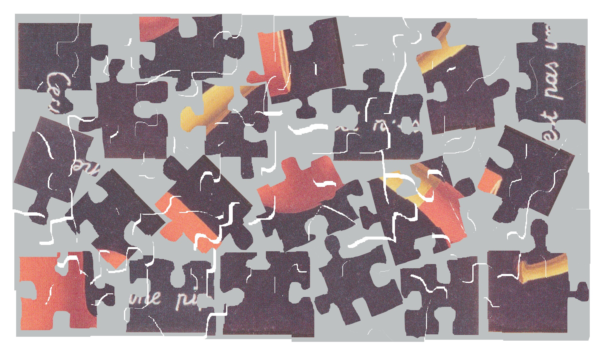
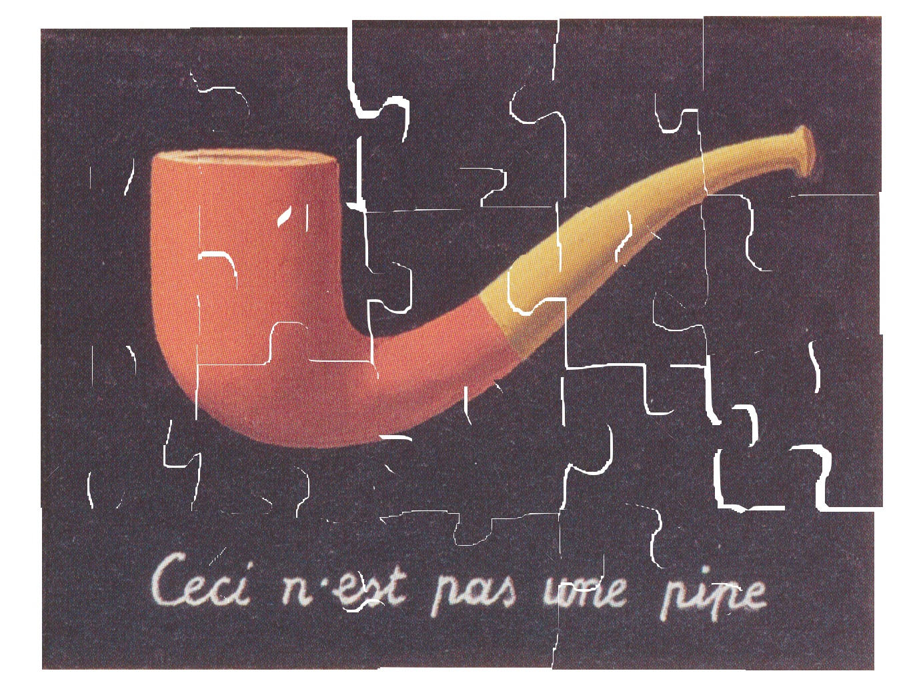
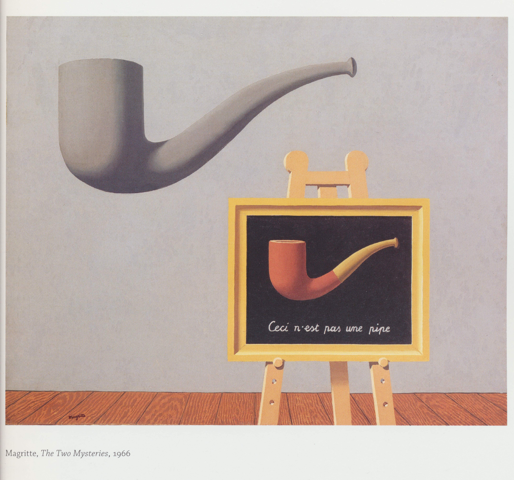
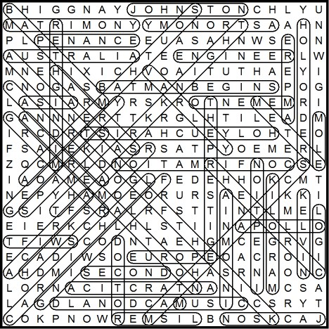
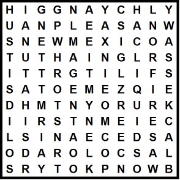

Like a mini puzzle hunt within a puzzle hunt, this puzzle consists of five independent puzzles which must be solved separately. Each of these five puzzles represents a standard puzzle format, and in keeping with the “Inception”-like recursion theme, presents a puzzle within a puzzle. Their answers, together, enable you to solve the “meta-puzzle,” which is the solution to the full puzzle.
The puzzles are: a cryptic, a double acrostic, a Duck Konundrum, a jigsaw puzzle, and a wordsearch. The added information is a shell for the Meta puzzle.
The first puzzle is a set of cryptic crossword clues:
| Sounds add up a little. | SOME, homophone |
| Ira portrayed by Rosenberg, LA’s schlemiel. | GLASS, hidden |
| Shelves stories with bad beginning. | TA(B)LES |
| Twist truth, lose last bit of respect, cause damage. | HURT, TRUtH rev. |
| Insult “Baldy” in a terrible way... | BADLY, anagram |
| ...due to saying “adios.” | BY, homophone |
| Peak of Eastern Illinois toll road | S + PIKE |
| There are this many bits in a nibble at tea time. | FOUR, 2defs |
| Even Christ landed a punch. | HIT, even letters |
| Skewers small fruit. | S + PEARS |
| Junior grand piano might be used to play one. | SON + G |
| Exists, in essence! | IS, & Lit, hidden/delete outer letters |
| First ABC news article. | AN, first letters |
| Curious blood donor contribution. | ODD, hidden |
| Feeling less rational or real. | NUMBER, 2defs |
| I wasn’t defeated expressly. | ONE, homophone |
When you combine the answers to the clues, each list produces a new cryptic clue. These are:
| Some glass tables hurt badly by spike. (4) | STAB, hidden |
| Hit Spears song is an odd number. (1) | 3, 2defs |
So the answer to the puzzle is STAB 3. Note that “Stab 3” is a film-within-a-film depicted in “Scream 3”.
A. NEXT GENERATION B. ONE CENT C. LUNCHEONETTE D. ATTENTIVE E. NEWSWORTHY F. WHITE WINES G. EFFETE H. NEUTRONS I. ELIXIR OF LIFE J. ENTENTE K. DEFENDERS L. TUNNEL VISION M. OFFENSIVE TACKLES N. GAME OVER O. ONE WAY STREET P. DELETIONS Q. EVERY WHICH WAY R. EXTROVERTED S. PENITENT T. ENTERTAINMENT U. REFUSESThe acrostic of the answers is: (Nolan) “We need to go deeper.” The “quote” obtained is: Folded Mexican snacks: sixteen, twenty one, twenty two, twelve, six. Coral formation: eighteen, eight, twenty three, ten. Resistance units: fourteen, two, thirteen, nineteen. Persuade or desire: fifteen, eleven, four, seventeen. Fall over: one, five, twenty, seven, nine, three.
This provides another double acrostic to solve:
V. Folded Mexican snacks ___ ___ ___ ___ ___ 16 21 22 12 6 W. Coral formation ___ ___ ___ ___ 18 8 23 10 X. Resistance units ___ ___ ___ ___ 14 2 13 19 Y. Persuade or desire ___ ___ ___ ___ 15 11 4 17 Z. Fall over ___ ___ ___ ___ ___ ___ 1 5 20 7 9 3
The solution to this double acrostic is:
V. TACOS W. REEF X. OHMS Y. URGE Z. TOPPLE
This gives the acrostic “Trout”, and the”quote” is: THE GOSPEL FROM OUTER SPACE, which is the answer to the puzzle. Note that The Gospel From Outer Space is a fictional book by Kilgore Trout described in the Kurt Vonnegut book Slaughterhouse Five.
Follow the instructions to the Duck Konundrum. The output at every step is as follows:
0. BRAINSURGEON 1. ABINRSURGEON (alphabetizing first 6 letters) 2. ABINSURGEON 3. ABINSUGREON 4. AINSUGREON 5. AINSUGRON (the most common letter is E) 6. AITNSUGRON (the second most common letter is T) 7. AUIGTRNOSN 8. AUIGTRNOSNEEEE (the vowel that doesn't appear is E) 9. AOUSINGETERENE 10. EWITHOUSINGETEREN (there are 5 P's and 13 R's; the 5th word of the 13th step is "WITH") 11. ITHOUSINGETERENEW 12. HOUSINGETEREITNEW 13. HOUSINGETDEREITNEW (the string begins with HOUSING + ET; the 48th letter is D) 14. HOUSINGETWENTIERED (the length of the string is even) 15. HOUSINGETWENTIETWORED (there is no word with more than 2 I's) 16. HOUSINGETWENTIETWORREDD 17. OUSINGETWENTIETHWORREDD (that number was TWO) 18. OUSINGTWENTIETHWORREDD (the most common vowel is E) 19. OUSINGTWENTIETHWORREDDS 20. REDOUSINGTWENTIETHWORDS (the word RED was spelled out)
The result is “Redo using twentieth words.” Every instruction is one sentence; taking the 20th words of each sentence in order reveals the further instructions, another Duck Konundrum:
Take the last instruction's fourth word; alphabetize its letters; shift by twelve letters; insert instructions' only digit after penultimate letter.
The last instruction’s fourth word is RIPE, which alphabetizes to EIPR. Caesar shifted by 12 letters gives QUBD. The only digit in the instructions is “3” (in the fourth instruction), and inserting it gives QUB3D, the solution to the puzzle. Note that QUB3D is a playable video game in the video game Grand Theft Auto IV.
Cut out the jigsaw puzzle pieces and fit them together. You will produce the following image:
This is an image of puzzle pieces. If you cut out these puzzle pieces and fit them together, you will produce another image:
This image is the answer to the puzzle. Note that while the painting resembles “The Treachery of Images” by Rene Magritte, the background is black instead of beige. In fact, this is a painting depicted within Magritte’s painting “The Two Mysteries”:
This variety wordsearch does not have a wordlist. However, after identifying some probable words in the diagram, you may notice that all the words belong to one of 7 categories, and that there are exactly 7 items in each category. The categories and items are:
The words can be found in the diagram as follows:
Finding these words leaves 121 letters in the grid, a square number. The 121 letters, taken in order, give another wordsearch:
This one with 4 groups of 4 items:
The solution to the puzzle is read from the leftover letters: HIGHLY UNPLEASANT THINGS IT IS SOMETIMES NECESSARY TO KNOW, which is a fictional book described in the novel “One For The Morning Glory.”
The solution to the five puzzles are, in their given order: STAB 3, THE GOSPEL FROM OUTER SPACE, QUB3D, an image, and HIGHLY UNPLEASANT THINGS IT IS SOMETIMES NECESSARY TO KNOW.
These all indicate works of art within works of art: STAB 3 is a film-within-a-film within SCREAM 3. THE GOSPEL FROM OUTER SPACE is a book within SLAUGHTERHOUSE FIVE. QUB3D is a video game within GRAND THEFT AUTO IV. The image is a painting within a painting in René Magritte’s THE TWO MYSTERIES (or, in French, LES DEUX MYSTERES). The last is a book within the book ONE FOR THE MORNING GLORY.
All of the outer works have numbers in their titles, providing their intended order. When placed in that order, and when the numbers given in the puzzle shell are taken as indices, the phrase THE SOUTH is revealed, as follows:
ONE FOR THE MORNING GLORY 7, 8 T H THE TWO MYSTERIES 14 E (the index is the same if the French title is used) SCREAM 3 1 S GRAND THEFT AUTO IV 14, 12 O, U SLAUGHTERHOUSE FIVE 7, 6 T, H
THE SOUTH is the solution to the full puzzle.